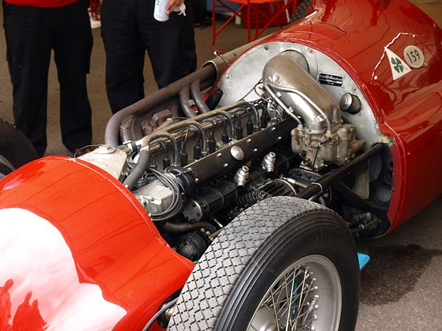
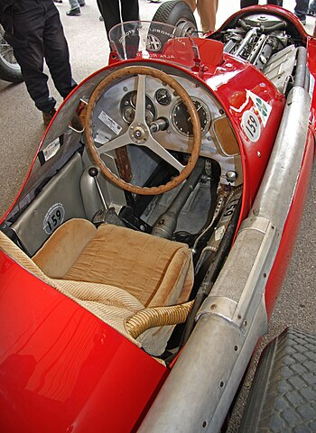

Alfa Romeo 158 Alfetta (1950)
Classic Red Formula 1 Car
The first champion F1 car was built long before the Formula 1 championship was ever introduced. The Alfa Romeo 158 was designed for the 1938 Grand Prix season, to compete in the voiturette class that acted as a second tier to the main Grand Prix competition.
At the end of the 1950 season, a further updated version known as the 159 was produced, which was used for the 1951 season. This version had reworked rear suspension, the old swing axle was replaced with a De-Dion axle and the engine produced around 420 bhp (313 kW) at 9600 rpm. The 159 had top speed of 305 kilometres per hour (190 mph) and it weighed 710 kilograms (1,570 lb). In order to achieve this power however, the simplistically designed engine was fitted with larger superchargers over time. This fact, combined with the rich mixture required to burn methanol in the engine resulted in extremely poor fuel economy the 159 achieved 1.5 miles per imperial gallon (190 litres per 100 kilometres; 1.2 miles per US gallon), compared to the Talbot-Lagos of the time, which delivered 9 miles per imperial gallon (31 litres per 100 kilometres; 7.5 miles per US gallon).[10] The 1951 British Grand Prix at Silverstone was the first Formula One Grand Prix not won by an Alfa primarily because Fangio and Farina both had to stop twice simply to re-fuel their cars and the Ferrari of José Froilán González did better on fuel and would go on to win the race, with Fangio second. Still, the Alfa had the edge on performance and with wins in Switzerland, France and Spain, Fangio won his first of five championships that year. The 159 had top speed of 305 kilometres per hour (190 mph) and it weighed 710 kilograms (1,570 lb). In order to achieve this power however, the simplistically designed engine was fitted with larger superchargers over time. This fact, combined with the rich mixture required to burn methanol in the engine resulted in extremely poor fuel economy - the 159 achieved 1.5 miles per imperial gallon (190 litres per 100 kilometres; 1.2 miles per US gallon), compared to the Talbot-Lagos of the time, which delivered 9 miles per imperial gallon (31 litres per 100 kilometres; 7.5 miles per US gallon). The 1951 British Grand Prix at Silverstone was the first Formula One Grand Prix not won by an Alfa primarily because Fangio and Farina both had to stop twice simply to re-fuel their cars and the Ferrari of José Froilán González did better on fuel and would go on to win the race, with Fangio second. Still, the Alfa had the edge on performance and with wins in Switzerland, France and Spain, Fangio won his first of five championships that year. After an unsuccessful bid by Alfa Romeo to obtain government assistance to meet development costs, the team announced their retirement from Grand Prix racing at the end of 1951 leaving the development of the 2.5-litre Alfa Romeo. This, combined with problems for other Formula One teams lead to a decree by the FIA that all Grand Prix races counting towards the World Championship of Drivers in 1952 and 1953 would be for cars complying with Formula Two rather than Formula One. The car's last Grand Prix win came in 1953 at Merano Grand Prix, Italy.
